Function review only. Chưa duyệt thiết kế, chưa phải cảnh hoàn thiện hoặc bản xuất trong game. Các ảnh mặt bằng được dựng trực giao từ hình học thật trong tệp Blender đề xuất. Mỗi khu vực có mặt bằng, trần, mặt đứng và góc vào.
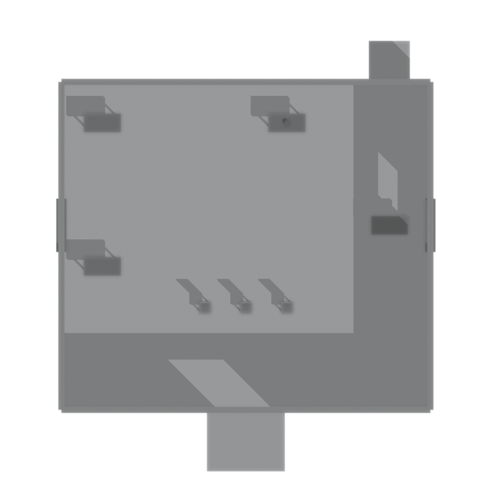
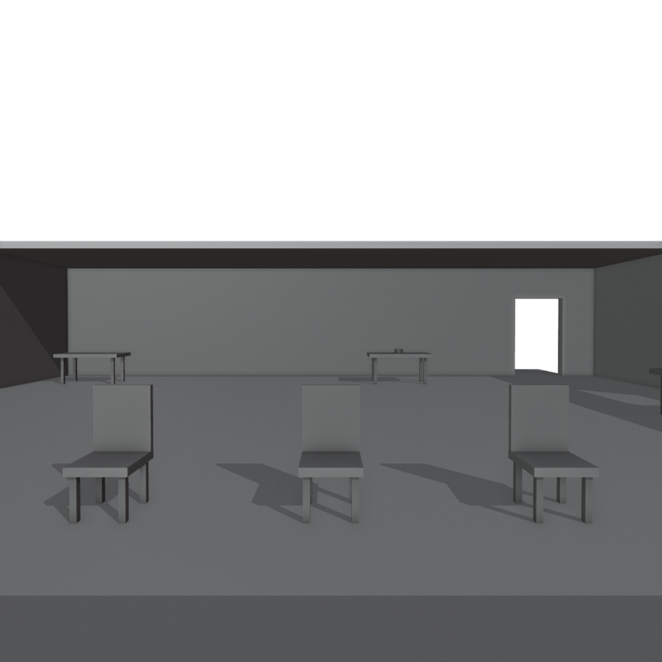
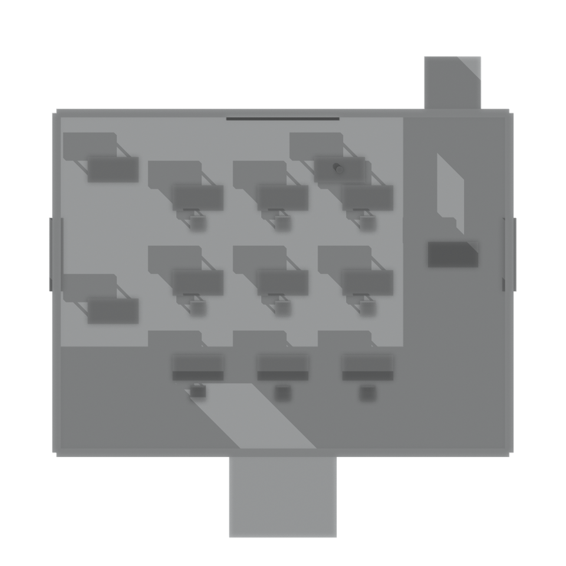
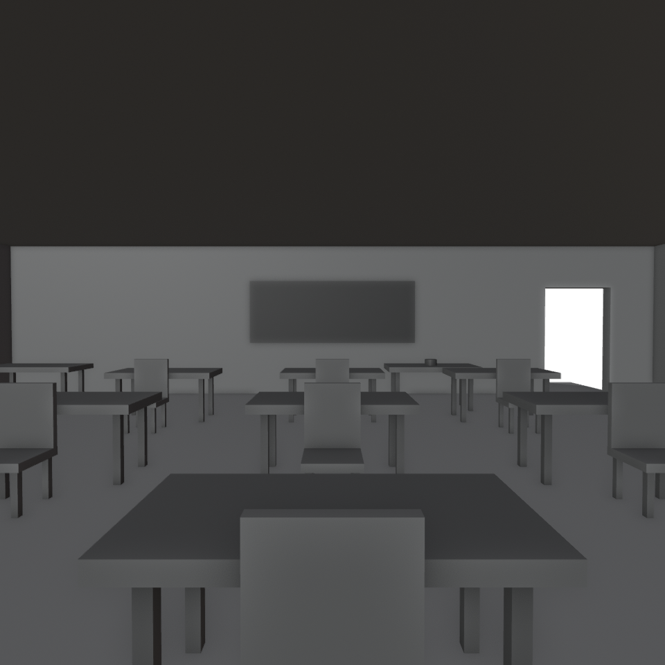
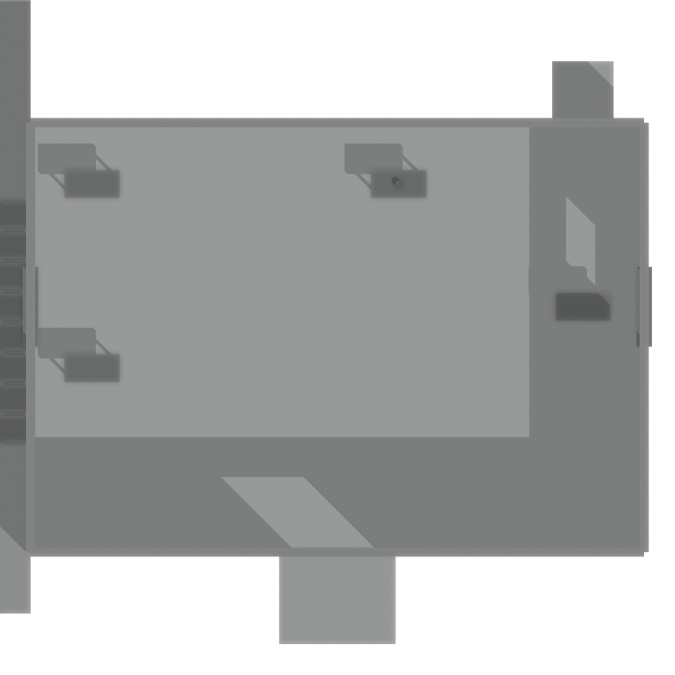
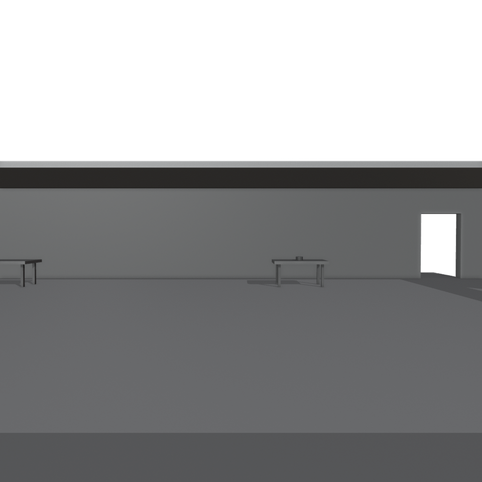
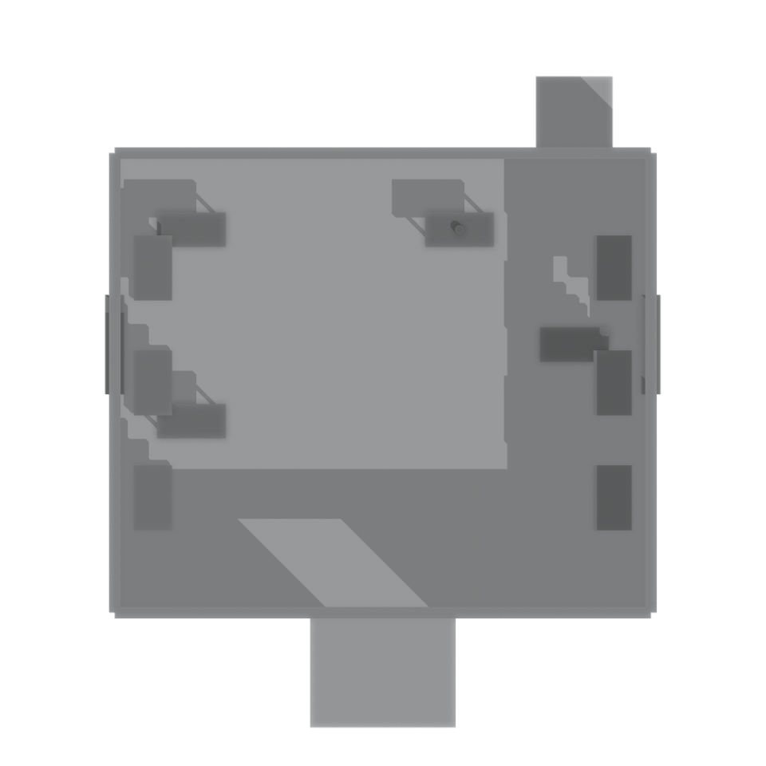
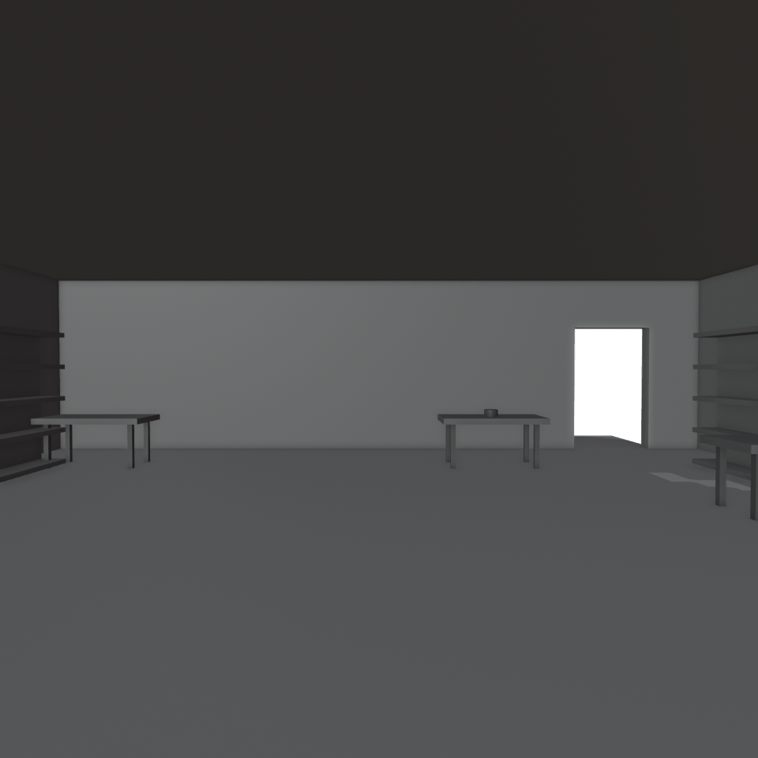
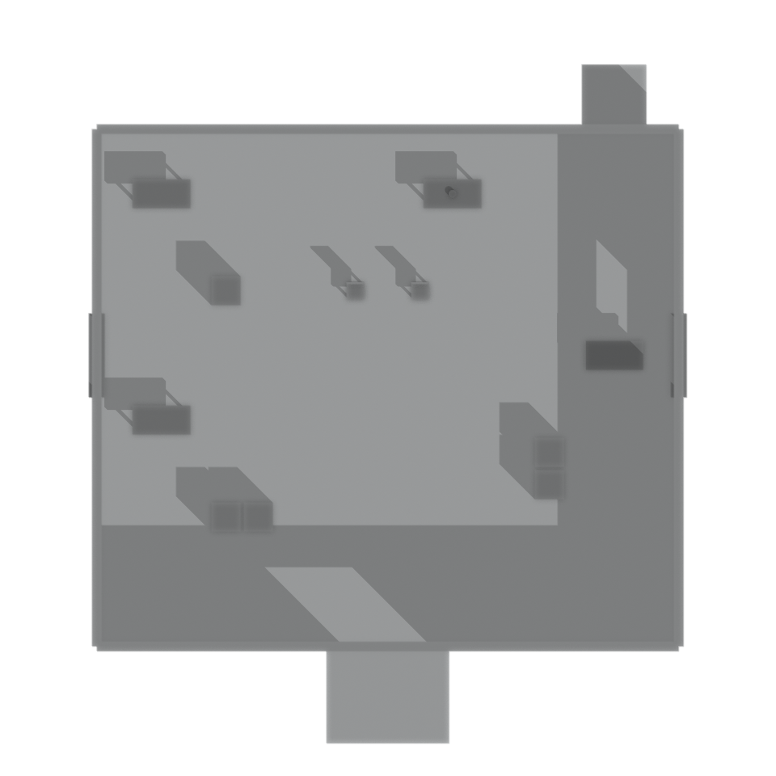
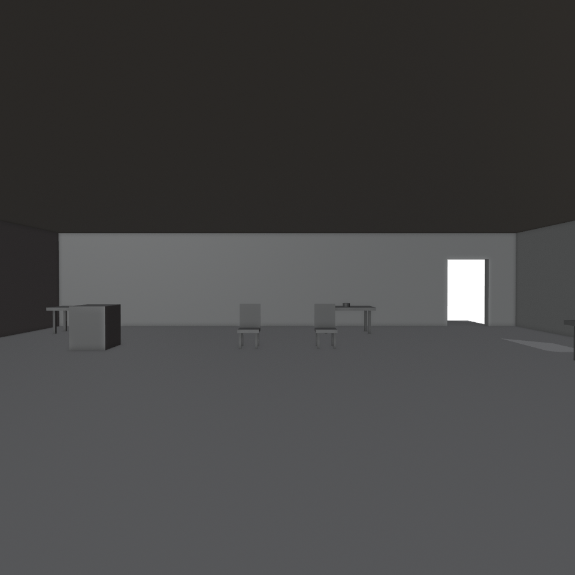
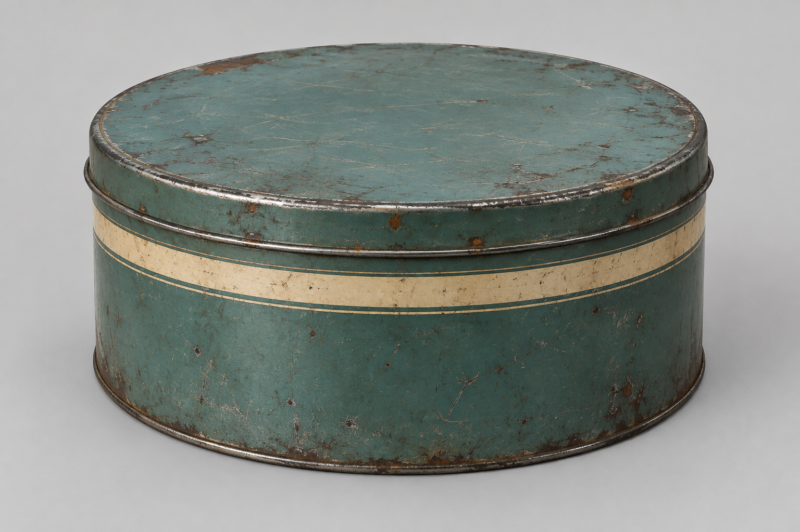
Ảnh tham chiếu từ image_gen; chưa có mesh Lux3D/Meshy, chưa duyệt hình ảnh.
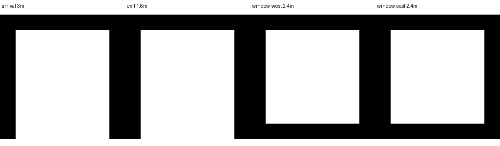
Lối vào rộng 3m; lối ra 1.6m; cửa sổ 2.4 × 1.4m. Đây là thiết kế đề xuất, chưa thay các cảnh đang chạy.